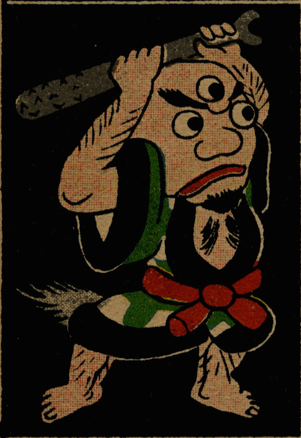

三つ目の入道。格子柄の着物を着て金棒を振り下ろそうとしている。尻には尾のようなものが見える。
出典：親書誌：U426_nichibunken_0280：[化物・猿飛佐助]；バケモノ サルトビ サスケ／日付：2014／資源識別子：U426_nichibunken_0280_0008_0000
Copyright (c)2010- International Research Center for Japanese Studies, Kyoto, Japan. All rights reserved.